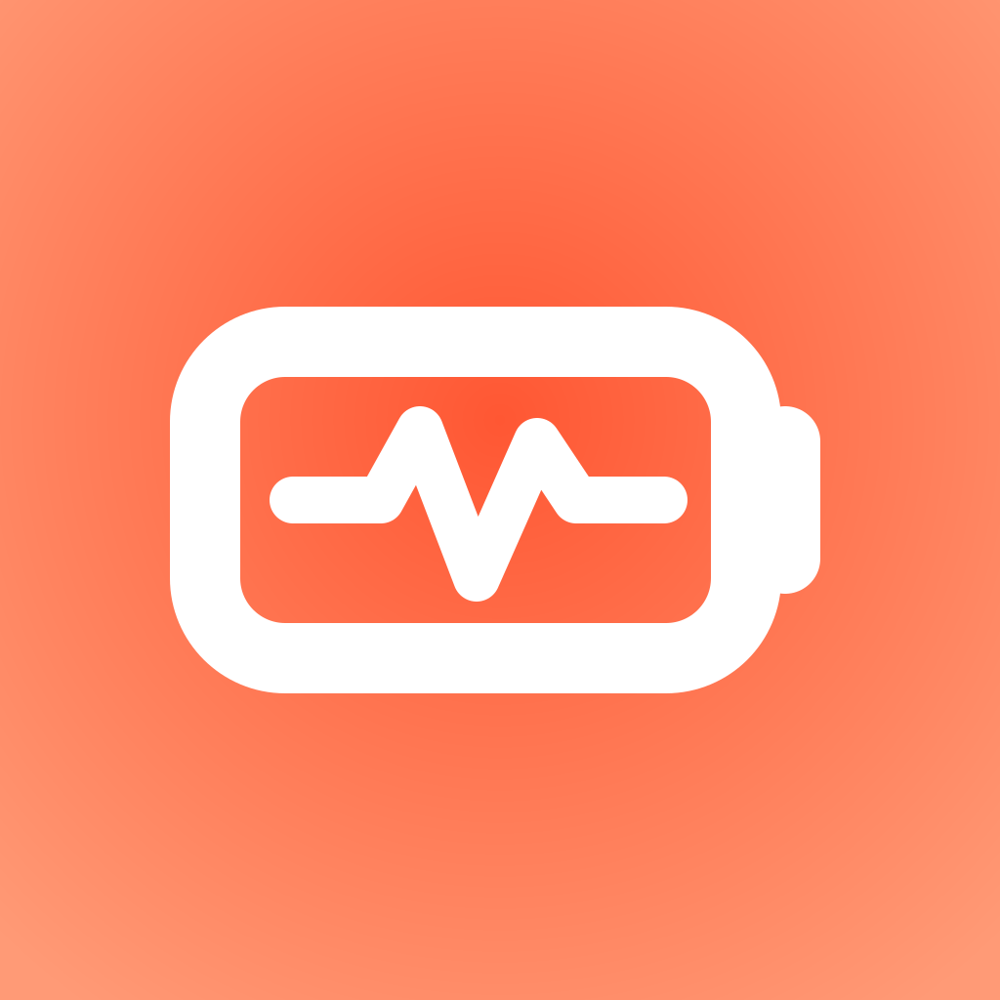

Battery health in your menu bar메뉴 막대의 배터리 건강 정보
Battery Health
See charge, battery health, cycle count, and power adapter wattage from a pulse-line icon in the menu bar. Everything is read locally on your Mac and never uploaded. 메뉴 막대의 펄스 라인 아이콘에서 충전량, 배터리 건강도, 사이클 수, 어댑터 와트를 확인하세요. 모든 값은 Mac에서 로컬로만 읽고 절대 업로드되지 않습니다.
Free on the Mac App Store. No account, no analytics, no network. Mac App Store에서 무료. 계정 없음, 분석 없음, 네트워크 없음.

One click, four numbers한 번의 클릭, 네 가지 수치
The battery facts macOS keeps behind System Settings시스템 설정 뒤에 숨겨둔 배터리 사실들
macOS knows your battery's maximum capacity and cycle count, but shows them several clicks deep. Battery Health puts them one click away, with a colour cue for the health figure and a plain note on where the number comes from. macOS는 배터리 최대 용량과 사이클 수를 알고 있지만, 몇 번 클릭해야 볼 수 있는 곳에 숨겨뒀습니다. Battery Health는 이 값을 클릭 한 번으로 꺼내 보여주고, 건강도에는 색 힌트를, 수치에는 출처를 함께 표시합니다.
What you see화면에 보이는 것
A small dashboard, nothing more작은 대시보드, 그 이상도 이하도 아닙니다
Charge충전량
The current charge level, with a one-click link to the Battery pane in System Settings for charging options.현재 충전량입니다. 충전 옵션을 조정하려면 옆의 링크로 시스템 설정의 배터리 패널로 한 번에 이동할 수 있습니다.
Battery health배터리 건강도
Maximum capacity as a percentage of design capacity: green above 80%, orange at 80%, red below. Tap the info icon to see the legend and how the figure was derived.설계 용량 대비 최대 용량의 백분율입니다. 80% 초과는 초록, 80%는 주황, 미만은 빨강으로 표시됩니다. 정보 아이콘을 누르면 범례와 계산 방식을 볼 수 있습니다.
Cycle count사이클 수
The number of charge cycles the battery has completed.배터리가 완료한 충전 사이클 수입니다.
Power adapter전원 어댑터
The rated wattage of the connected adapter, updated the moment you plug in or unplug. A dock that reports no wattage shows as Connected.연결된 어댑터의 정격 와트로, 연결·해제 즉시 갱신됩니다. 와트를 보고하지 않는 독은 '연결됨'으로 표시됩니다.
Condition상태
Shown only when macOS reports a battery condition, so you never see a guessed value.macOS가 배터리 상태를 보고할 때만 표시되므로, 추측값을 보는 일은 없습니다.
Launch at Login로그인 시 시작
One switch on the dashboard, registered through the standard macOS login-item service.대시보드의 스위치 하나로, 표준 macOS 로그인 항목 서비스에 등록됩니다.
Private by design설계부터 프라이빗
Read locally, stored nowhere로컬에서 읽고, 어디에도 저장하지 않습니다
Battery Health reads a short, fixed list of battery values that macOS already exposes and shows them on screen. It has no account, no analytics, no network access, and keeps no battery history. When macOS does not provide a value, the app shows "Unavailable" rather than estimating one. Battery Health은 macOS가 이미 제공하는 배터리 값의 짧고 고정된 목록만 읽어 화면에 보여줍니다. 계정, 분석, 네트워크 접근이 없고 배터리 기록도 남기지 않습니다. macOS가 값을 주지 않으면 추정 대신 '사용할 수 없음'을 표시합니다.
Where the numbers come from수치의 출처
Exactly what the app reads앱이 읽는 것, 정확히
Charge and power source충전량과 전원
The macOS power sources API: current and maximum charge for the percentage, and whether the Mac is on AC or battery.macOS 전원 공급 API에서 현재·최대 충전량(백분율용)과 어댑터/배터리 전원 여부를 읽습니다.
Adapter wattage어댑터 와트
Only the rated-watts value from the adapter details API. Adapter identifiers and serial numbers are never read.어댑터 상세 API의 정격 와트 값만 읽습니다. 어댑터 식별자나 시리얼 번호는 절대 읽지 않습니다.
Health and cycles건강도와 사이클
Seven battery properties from the system battery service: cycle count, design capacity, full-charge capacity, reported maximum capacity, and the battery condition strings.시스템 배터리 서비스의 일곱 가지 속성 — 사이클 수, 설계 용량, 완충 용량, 보고된 최대 용량, 배터리 상태 문자열입니다.
Honest limits정직한 한계
What Battery Health does not doBattery Health이 하지 않는 것
Rated watts, not live power정격 와트, 실시간 소비 전력이 아님
The Power adapter row shows the adapter's rating. A 67 W adapter reads 67 W whether it is delivering 63 W or nothing at all.전원 어댑터 항목은 정격을 보여줍니다. 67 W 어댑터는 63 W를 공급하든 아무것도 공급하지 않든 67 W로 표시됩니다.
No charging control충전 제어 없음
Charge limits are managed by macOS. The link beside Charge takes you to System Settings, where those options live.충전 한도는 macOS가 관리합니다. 충전량 옆 링크는 해당 옵션이 있는 시스템 설정으로 안내합니다.
Built-in battery required내장 배터리 필요
Battery Health is for MacBook Air and MacBook Pro running macOS 14 or later. On a desktop Mac it reports that battery information is unavailable.Battery Health은 macOS 14 이상의 MacBook Air와 MacBook Pro용입니다. 데스크톱 Mac에서는 배터리 정보를 사용할 수 없다고 알려줍니다.
FAQ
Common questions자주 묻는 질문
Why does the health figure differ from another app?다른 앱과 건강도 수치가 왜 다른가요?
Apps differ in which capacity values they divide. Battery Health divides full-charge capacity by design capacity when both are available and says so; if only a reported maximum capacity exists, it shows that value and labels it "Reported by macOS".앱마다 나누는 용량 값이 다릅니다. Battery Health은 두 값이 모두 있으면 완충 용량을 설계 용량으로 나누고 그렇게 표시합니다. 보고된 최대 용량만 있으면 그 값을 보여주고 'macOS 보고값'이라고 표기합니다.
How often does it refresh?갱신 주기는?
Health and cycle values refresh once an hour or when you click Refresh. Adapter changes are picked up immediately when you plug in or unplug.건강도와 사이클 값은 1시간마다 또는 새로 고침을 누를 때 갱신됩니다. 어댑터 연결·해제는 즉시 반영됩니다.
Does it send anything anywhere?데이터를 어디로 보내나요?
No. The app has no network access. The only outbound action is the optional "Report an Issue" button, which opens a pre-filled draft in your own mail client that you can edit or discard.아니요. 네트워크 접근이 없습니다. 나가는 동작은 선택적인 '문제 보고' 버튼뿐이며, 직접 편집하거나 버릴 수 있는 임시 메일 초안을 사용 중인 메일 앱에서 엽니다.
Why is the menu-bar icon white rather than coloured?메뉴 막대 아이콘이 색이 아니라 흰색인 이유는?
So it matches the other status items and stays legible on light and dark menu bars. The health colour is shown inside the dashboard.다른 상태 항목과 어울리고 밝은·어두운 메뉴 막대 모두에서 잘 보이기 위해서입니다. 건강도 색상은 대시보드 안에서 확인할 수 있습니다.